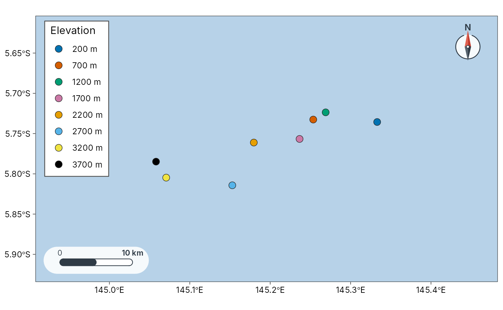
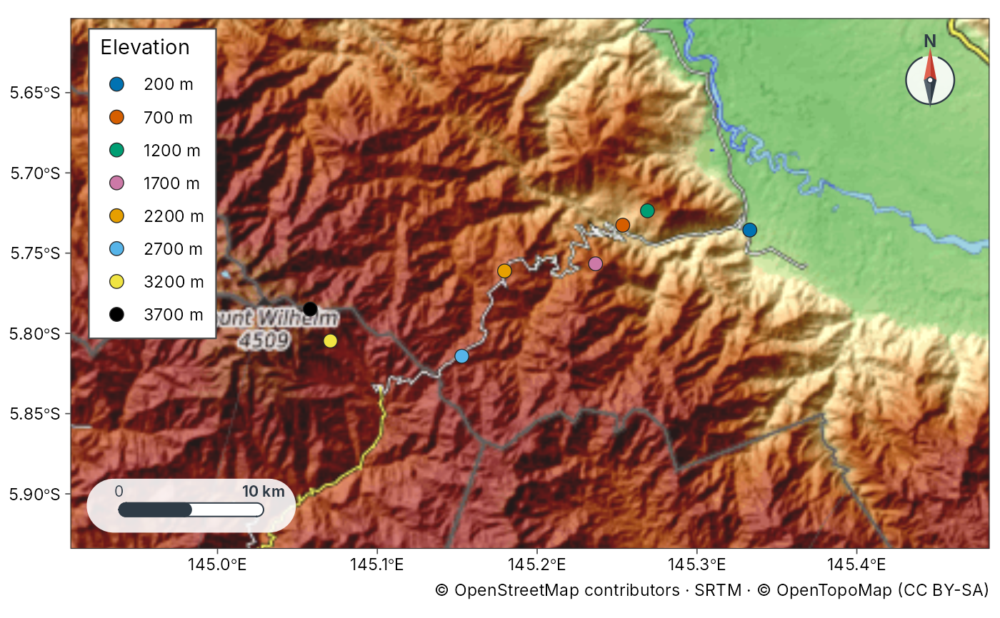
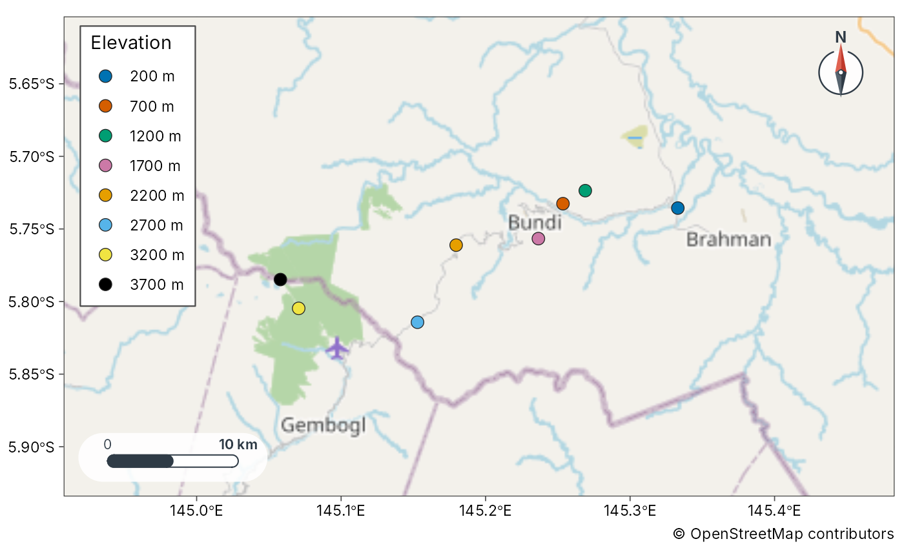

Basemaps for study-site and diversity maps
geo_basemap.Rdgeo_basemap() prepares a basemap for plot_sites() and plot_geo()
without sending users to ggmap or other non-tidy tools.
Online tiles (free, no API key; cached on disk):
basemap | Style |
"esri" (default) | Esri World Imagery (satellite) |
"esri_topo" | Esri World Topographic Map |
"esri_street" | Esri World Street Map |
"esri_relief" | Esri World Shaded Relief |
"esri_terrain" | Esri World Terrain Base |
"esri_natgeo" | Esri National Geographic World Map |
"topo" | OpenTopoMap (contours and hillshade from OpenStreetMap and SRTM) |
"osm" | OpenStreetMap standard |
"osm_hot" | OpenStreetMap Humanitarian style |
"carto", "carto_voyager", "carto_dark" | CARTO Positron, Voyager and Dark Matter |
Built from an elevation model (offline when you pass dem):
"hillshade" (multi-directional hillshade), "contour" (labelled
contour lines) and "terrain" (both). Without dem, the elevation
model is downloaded with geo_elevation() for the map extent.
Other: "coast" draws Natural Earth land polygons over an ocean fill
(offline), "none" draws nothing, and a SpatRaster or file path draws
that raster. Online tiles use maptiles when installed, otherwise a
small XYZ downloader. If tiles cannot be fetched, the function falls back
to "coast" with a message. Tile maps carry the provider's required
attribution (for example "© OpenStreetMap contributors") as the plot
caption.
Usage
geo_basemap(
x,
basemap = "esri",
coastline = NULL,
lon = lon,
lat = lat,
zoom = NULL,
alpha = 0.9,
crs = 4326,
dem = NULL,
contour_breaks = NULL
)Arguments
- x
An
sfobject, a bbox numeric vectorc(xmin, ymin, xmax, ymax), or a data frame with lon/lat used only to set the extent.- basemap
Basemap specification: one of the tile names in the table above,
"hillshade","contour","terrain","coast","none", aSpatRaster, or a file path.- coastline
Optional
sfpolygons/lines used whenbasemap = "coast".- lon, lat
Coordinate columns when
xis a plain data frame.- zoom
Optional tile zoom. When
NULL, chosen from the extent.- alpha
Opacity of raster / tile layers.
- crs
Target CRS (default EPSG:4326).
- dem
For
"hillshade","contour"and"terrain": an elevationSpatRasteror file path. WhenNULL, one is downloaded withgeo_elevation().- contour_breaks
Contour interval (one number, in metres) or a vector of contour levels. When
NULL, about eight pretty levels.
Value
A list with class tmr_geo_basemap containing ggplot2 layers and
metadata (provider, offline). Add it to a ggplot with + via
ggplot2::ggplot() helpers, or pass the same basemap value to
plot_sites() / plot_geo().
Examples
sites <- geo_example_sites("wilhelm")
# Offline: Natural Earth coastline
plot_sites(sites, lon, lat, basemap = "coast", colour = elevation_band)

# \donttest{
# Online tiles (need internet)
plot_sites(sites, lon, lat, basemap = "topo", colour = elevation_band)

plot_sites(sites, lon, lat, basemap = "osm", colour = elevation_band)

# Hillshade and contours from an elevation model
if (rlang::is_installed("geodata") || rlang::is_installed("elevatr")) {
plot_sites(sites, lon, lat, basemap = "terrain", colour = elevation_band)
}
# }